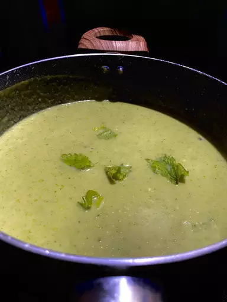

Broccoli Soup

Best cream of broccoli soup
This broccoli soup recipe is thick and flavorful. It is simple, delicious, and quick to make.
Ingredients
- Butter
- Onions and Celery
- Broth (chicken or vegetable
- Broccoli
- Flour, milk and butter
- Pepper
Steps
- Sauté the onions and celery in butter until they're tender. Add the broccoli florets and the chicken broth, cover the pot, and simmer for about 10 minutes.
- You can use a countertop blender or an immersion blender to purée the soup. Give it a few quick pulses, then blend continuously until the soup is totally smooth.
- Melt a few tablespoons of butter in a separate saucepan. Stir in the flour, then the milk. Cook the milk mixture until it's thick and bubbly, then add it to the soup. Finish it off with a dash of pepper (and the other seasonings of your choosing).